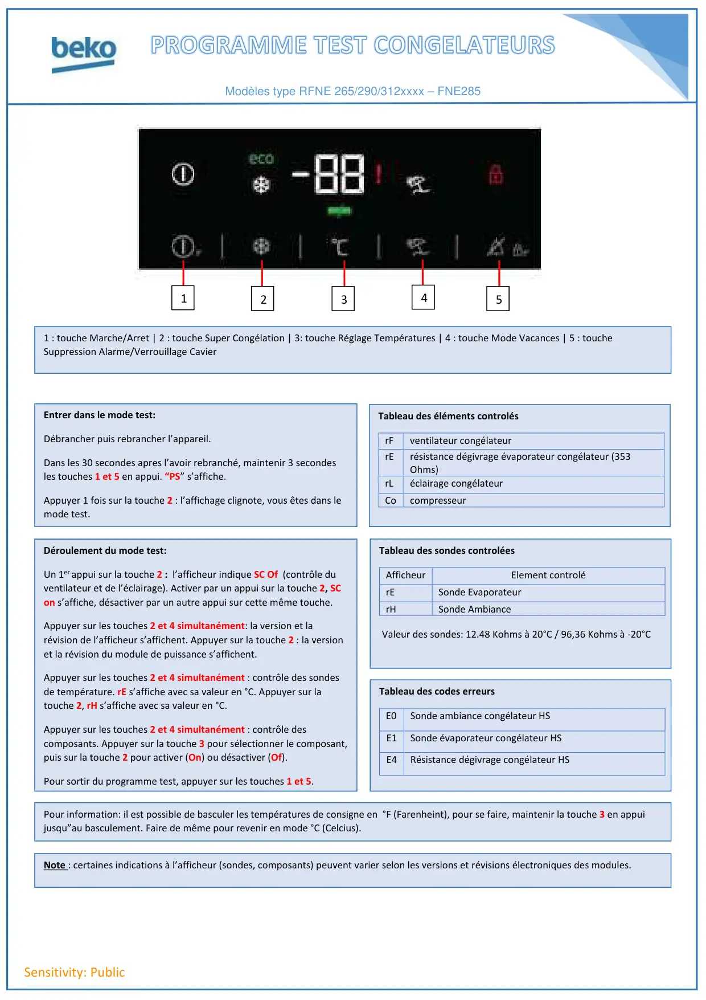

Progr.Test RFNE FNE V2

Sensitivity: PublicModèles type RFNE 265/290/312xxxx – FNE28512543Entrer dans le mode test:Débrancher puis rebrancher l’appareil.Dans les 30 secondes apres l’avoir rebranché, maintenir 3 secondesles touches 1 et 5 en appui. “PS” s’affiche.Appuyer 1 fois sur la touche 2 : l’affichage clignote, vous êtes dans lemode test.Tableau des éléments controlésrFventilateur congélateurrErésistance dégivrage évaporateur congélateur (353Ohms)rLéclairage congélateurCocompresseurTableau des sondes controléesAfficheurElement controlérESonde EvaporateurrHSonde AmbianceDéroulement du mode test:Un 1er appui sur la touche 2 : l’afficheur indique SC Of (contrôle duventilateur et de l’éclairage). Activer par un appui sur la touche 2, SCon s’affiche, désactiver par un autre appui sur cette même touche.Appuyer sur les touches 2 et 4 simultanément: la version et larévision de l’afficheur s’affichent. Appuyer sur la touche 2 : la versionet la révision du module de puissance s’affichent.Appuyer sur les touches 2 et 4 simultanément : contrôle des sondesde température. rE s’affiche avec sa valeur en °C. Appuyer sur latouche 2, rH s’affiche avec sa valeur en °C.Appuyer sur les touches 2 et 4 simultanément : contrôle descomposants. Appuyer sur la touche 3 pour sélectionner le composant,puis sur la touche 2 pour activer (On) ou désactiver (Of).Pour sortir du programme test, appuyer sur les touches 1 et 5.Tableau des codes erreursE0Sonde ambiance congélateur HSE1Sonde évaporateur congélateur HSE4Résistance dégivrage congélateur HS1 : touche Marche/Arret | 2 : touche Super Congélation | 3: touche Réglage Températures | 4 : touche Mode Vacances | 5 : toucheSuppression Alarme/Verrouillage CavierNote : certaines indications à l’afficheur (sondes, composants) peuvent varier selon les versions et révisions électroniques des modules.Pour information: il est possible de basculer les températures de consigne en °F (Farenheint), pour se faire, maintenir la touche 3 en appuijusqu”au basculement. Faire de même pour revenir en mode °C (Celcius).Valeur des sondes: 12.48 Kohms à 20°C / 96,36 Kohms à -20°C
1 / 1